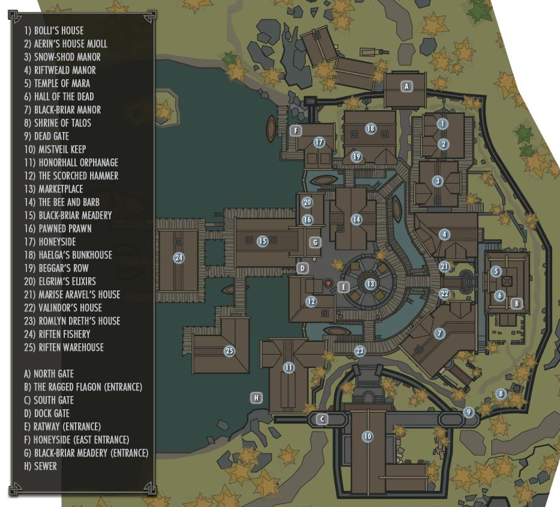
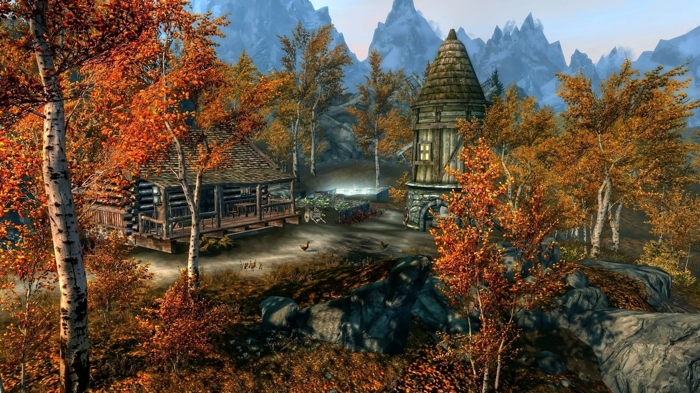
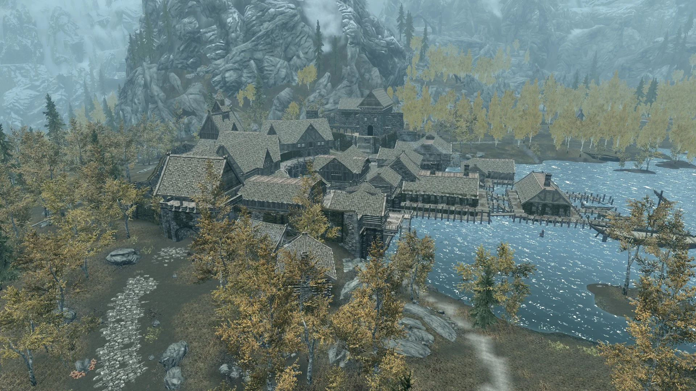
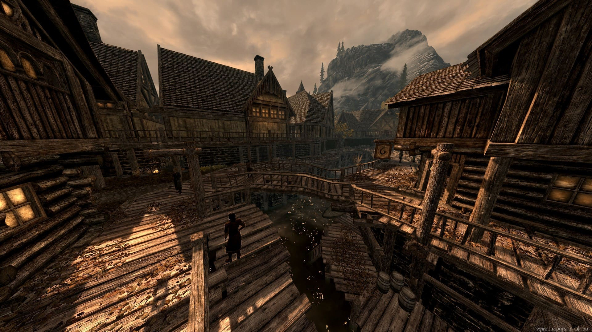

RIFTEN
Riften es una ciudad localizada en el sudeste de Skyrim. Su jarl es Laila la Legisladora. Antes era una gran ciudad portuaria, pero fue destruida por un incendio al principio de la Cuarta Era.
La ciudad es de clase baja, con casas de pobre calidad, estrechas calles y una gran red de alcantarillas, funcionando bajo las calles. La actual jarl se encuentra en el Bastión de Velo Brumoso. Esta ciudad está bajo el control de la influyente familia Espino Negro y su severa líder, Maven.
Este poderoso clan habita la Mansión de Espino Negro, una de las localidades más lujosas de Riften.
Para entrar a la ciudad, uno de los guardias de la entrada exige una tasa de visitante, que varia según el nivel. Se trata de una estafa, ya que el guardia es en realidad un contacto del Gremio de Ladrones tratando de conseguir dinero extra. Puedes persuadirlo, intimidarlo, o atacarlo y obligarle a dejarte pasar sin pagar. También puedes infiltrarte a través del aserradero que hay en la parte trasera.
Aquí también consigues el amuleto de Mara que es necesario para casarse. Este se encuentra en el templo de mara, donde se celebra la boda del Sangre de Dragón si decide casarse. Muchos ciudadanos se quejaran de la corrupción de la ciudad y echaran la culpa al Gremio de Ladrones y a Maven Espino Negro.